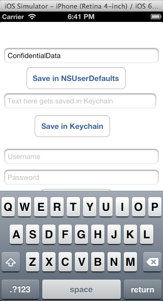
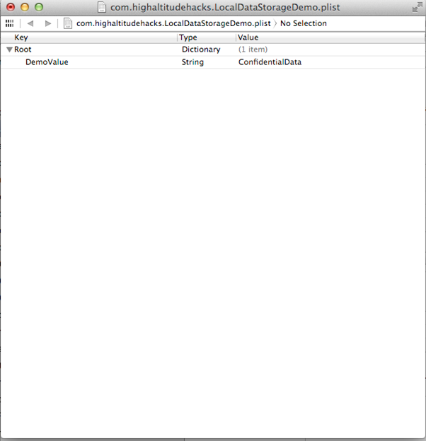
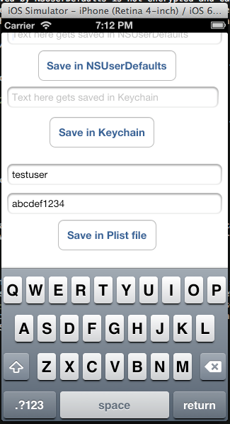
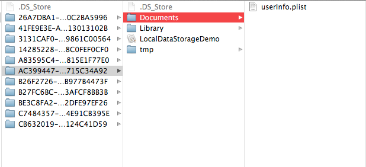
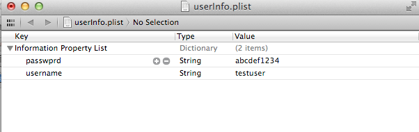
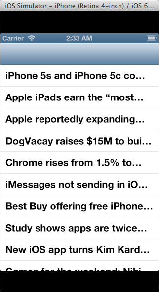

In this article, we will look at the different ways in which applicatons can store data locally on the device and look at how secure these methods are.
We will be performing some of these demonstrations in a sample app that you can download from my github account. For the CoreData example, you can download the sample app from here
One of the other things that we will doing different in this example is that we will be running the application on the IOS simulator using Xcode rather than on the device and hence will be analyzing the application on our computer rather than on the device. This is just to demonstrate that you can perform all the steps performed before in previousarticles on your system as well by running the application via Xcode. Optionally, you can simply run the application on your device using the steps mentioned here.
NSUserDefaults
One of the most common ways of saving user preferences and properties in an application is by using NSUserDefaults. The information stored in NSUserDefaults persists even if you close the application and start it again. One of the examples of saving information in NSUserDefaults is the logged in state of the user. We can save the logged in state of the user (YES or NO) in NSUserDefaults so that when the user closes the application and starts it again, the application can fetch data from NSUserDefaults and display different UI to the user depending on whether he is logged in or not. Some applications also use this feature to save confidential information like the user’s access token so that the next time the application launches, they can just use that access token to authenticate the user again.
Download the sample application from my github page and run it. You will get this view. Now enter some info in the text field related to NSUserDefaults and tap the button that says Save in NSUserDefaults. This will save the data to NSUserDefaults.

What most people do not realize is that the data saved by NSUserDefaults is not encrypted and can be easily viewed from the application bundle. It is stored in a plist file with the name as the bundle Id of the application. First of all, we must find the application bundle for our application. Since we are running the application on our system, we can find our applications on the path /Users/$username/Library/Application Support/iPhone Simulator/$ios version of simulator/Applications/. In my case, the location is “Users/prateekgianchandani/Library/Application Support/iPhone Simulator/6.1/Applications”
Once we go to that directory, we can see a bunch of applications. These are all the application that we run via Xcode for that particular IOS version. We can find our application by the date modified tag as it would have the latest modified date.
Go inside the app bundle. All the contents saved by NSUserDefaults is saved inside a plist file that can be found under Library -> Preferences -> $AppBundleId.plist as shown in the image below.
Open up the plist file and you can easily view the contents of the file.

Sometimes, the plist files can be in binary format and hence not easily viewable at first. You can either convert it into xml format using the plutil utility or just view the application in a device using the tool iExplorer.
Plist Files
Another common way of storing data is in the plist files. Plist files should always be used for saving information that is not confidential as they are unencrypted and can be easily be fetched even from a non-jailbroken device. There have been vulnerabilities reported where big companies have been found to store condifential data like Access tokens, Usernames and passwords in plist files. In the demo app, lets enter the information for plist and tap on Save in plist file.

Here is the code for saving data to the plist file.
NSArray *paths = NSSearchPathForDirectoriesInDomains(NSDocumentDirectory,NSUserDomainMask,YES); NSString *documentsDirectory = [paths objectAtIndex:0]; NSString *filePath = [documentsDirectory stringByAppendingString:@"/userInfo.plist"]; NSMutableDictionary* plist = [[NSMutableDictionary alloc] init]; [plist setValue:self.usernameTextField.text forKey:@"username"]; [plist setValue:self.passwordTextField.text forKey:@"passwprd"]; [plist writeToFile:filePath atomically:YES];
As you can see from the code, you can always specify a custom path for the plist file. We can then search the entire application bundle for all plist files. In this case, we find a file named userinfo.plist inside the application bundle.

As we can see, it contains the user/pass combination that we had entered in the fields before.

CoreData and Sqlite files
Since CoreData basically uses Sqlite internally to save information, we are only going to cover CoreData here. If you don’t know what CoreData is , here is a screenshot from Apple’s documentation about CoreData.
So basically, CoreData can be used to create a model, manage relationships between different types of objects, save the data locally, and fetch them from the local cache whenever you want with queries. In this tutorial, we will be using a sample application from github. Once you run it you will see that is is just a simple RSS feed.

This application uses Core Data to save its information. It is important to note that the Core Data framework internally uses Sql queries to store its data and hence all the files are stored as .db files. Let’s go to the app bundle for this app and look at where this information is stored. In the app bundle for this application, you can see that there is a file named MyCoreData.sqlite.
Let’s analyze it using sqlite3. In my case, the location of the sqlite file is at ~/Library/Application Support/iPhone Simulator/6.1/Applications/51038055-3CEC-4D90-98B8-A70BF12C7E9D/Documents.
As we can see, there is a table named ZSTORIES. In Core Data, every table name is appended with Z at the beginning. This means that the entity name is actually STORIES as we can clearly see from the source files in the project.
We can easily dump all the values from this table. Make sure the headers are on.
As we can see, by default, all the data stored in CoreData is unencrypted and can be easily fetched out. Therefore, we should not use CoreData for saving confidential information ever. There are libraries available that act as a wrapper over CoreData and claim to save encrypted dat. There are other implementations as well that store encrypted data on the device without using CoreData. For e.g the Salesforce Mobile SDK use a feature known as SmartStore that can store encrypted data on the device in the form of Soups.
Keychain
Some developers don’t prefer to save data in the Keychain because it is not that straightforward to implement . However, saving info in the Keychain is probably the most secure way of storing data on a non-jailbroken device. On a jailbroken device however, nothing is secure. Here is an article that demonstrates how easy it can be to save data in the keychain using simple wrapper classes. Basically, the code for saving data in the keychain is just like saving data with NSUserDefaults with this wrapper. Here is a snippet of code that saves a string to the keychain. Notice that the syntax looks very similar to using NSUserDefaults.
PDKeychainBindings *bindings = [PDKeychainBindings sharedKeychainBindings]; [bindings setObject:@"XYZ" forKey:@"authToken"];
And here is a small snippet for fetching data from the keychain.
PDKeychainBindings *bindings = [PDKeychainBindings sharedKeychainBindings]; NSLog(@"Auth token is %@",[bindings objectForKey:@"authToken"]]);
Small Tricks
As we discussed before, no information is safe on a jailbroken device. The attacker can get info from Plist files, dump your entire keychain, replace method implementations and can pretty much do anything he wants. But the developer can surely use some small tricks to make sure that the script kiddies find it difficult to get the information they want from the application. It is possible to encrypt files while saving them locally on the device. Here is an article that talks about that in good detail. Or you can just make it difficult for them to figure out the correct information. For e.g let’s consider the example of saving the authentication token for a particular user on the keychain. A script kiddie will just try and use the auth token dumped from the keychain and try to hijack the session of the user. If we can just reverse the auth token before saving it on the keychain, the attacker wouldn’t know that the actual auth token is actually reverese of the one stored in the keychain. He can surely trace every call in your application and figure it out, but such simple techniques will help keep the script kiddies guessing for enough time that they will start looking for vulnerabilites in other applications. Another such example of these small tricks could be appending a constant string to the actual value before saving it.
In the next article, we will look at runtime analysis using GDB.